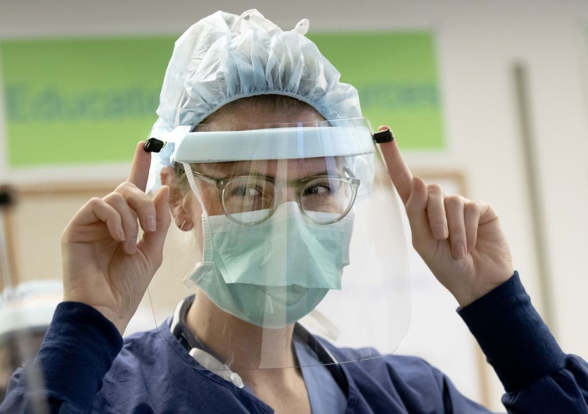
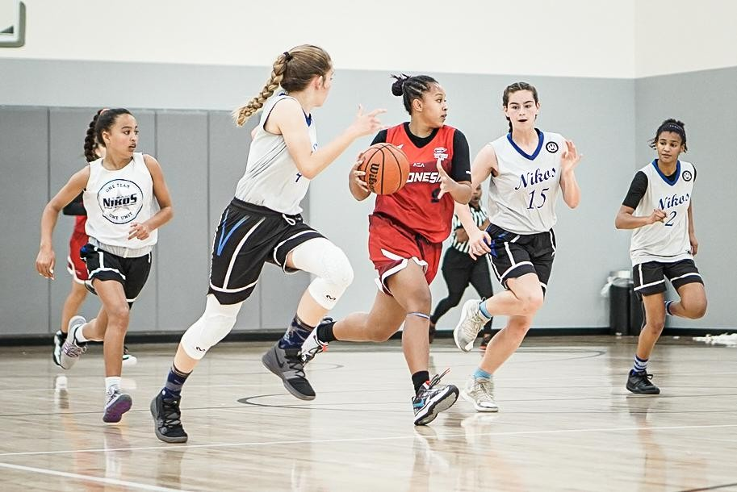

Society Basketball
Basketball club to everyone
NBA
Posted on 17.30 WIB, 08 April 2020
Remy Martin mendeklarasikan diri untuk mengikuti NBA Draft 2020. Garda keturunan Filipina-Amerika Serikat itu berusaha mengejar mimpinya menjadi pemain pro. Ia mengumumkan deklarasinya via Instagram. Martin merupakan garda Arizona State University (ASU). Ia sudah bermain di sana selama tiga tahun. Martin kini bersiap untuk meninggalkan kampus....Saya memulai ini pada usia muda. Saya telah berusaha untuk bermain di NBA. Sekarang saya memutuskan untuk mewujudkan impian itu, kata Martin per ESPN. Saya akan mengingat waktu yang saya habiskan di ASU. Martin membela ASU dengan rata-rata 19,1 poin, 4,1 asis, dan 3,1 rebound pada 2019-2020. Ia berhasil mengantarkan tim kampusnya ke turnamen NCAA. Namun, gagal melakukan perjalanan karena Covid-19. NCAA membatalkan March Madness yang mestinya berlangsung pada Maret lalu. Penampilan Martin musim ini membuatnya berhak masuk ke jajaran First-team All-Pac 12. Musim lalu, ia finis di Second Team saja. Dua musim sebelumnya, Martin sempat menjadi Pac-12 Sixth Man of the Year.Saya mendukung Remy 100 persen untuk mengejar mimpinya, ujar Kepala Pelatih ASU Bobby Hurley lewat akun Twitter-nya.Martin sendiri memiliki dwikenegaraan. Ibunya, Mary Ann Macaspac, merupakan orang Filipina yang pindah ke Amerika Serikat saat SMA. Martin sempat sekolah di Sierra Canyon sebelum bergabung dengan ASU.Dengan deklarasikan Martin, calon-calon ruki berposisi garda semakin banyak. Sebelumnya, ada Nico Mannion dari University of Arizona. Sama seperti Martin, Nico juga berstatus dwikengaraan, yaitu Italia-Amerika Serikat. Keduanya kini mesti bersaing dengan pemain lain yang sudah lebih dulu mendeklarasikan diri. Ada beberapa nama beken yang berpotensi terpilih pada urutan 10 besar. Posisinya Martin dan Mannion belum jelas di mana. (GNP)
Social
Posted on 09 April 2020 
Setelah New Balance, Nike turut berkecimpung sebagai perusahaan perlengkapan olahraga yang membuat Alat Proteksi Diri (APD). Perusahaan yang berbasis di Oregon itu mantap membuat pelindung wajah. Alat tersebut berfungsi untuk menangkal zat-zat yang berpotensi mengenai area wajah. Mereka mengumumkan bahwa tim inovasi, manufaktur, dan produknya telah mengembangkan pelindung wajah dan lensa respirator dengan pembersih udara (Power, Air Purifying Respirator atau PAPR). Tim tersebut bermitra dengan para profesional kesehatan dari Oregon Health & Science University (OHSU)....CEO Nike, John Donahue, pertama kali mengumumkan proyek ini pada 24 Maret 2020 melalui sambungan video kepada awak media. Hal itu dilakukan setelah New Balance mengumumkan untuk membuat masker APD dengan bahan sepatu. Pada hari Selasa (7/4), Nike merilis gambar lengkap pelindung wajah yang baru dibuatnya dalam sebuah rilis pers. Mereka mendaku menggunakan elemen sepatu ikonik mereka, bantalan Nike Air. Terdapat pula bagian-bagian lain dari sepatu yang disematkan. Merancang ulang bantalan plastik yang berada di kerah tumit Nike Air Max 90. Menempatkan tali sepatu sebagai tali pengikat. Yang paling utama adalah komponen plastik TPU, bantalan Nike Air, yang telah ditata ulang, Tujuan Nike, menurut rilis, adalah mereproduksi pelindung wajah yang mirip dengan yang digunakan di Oregon Health & Science University. Yang membedakan adalah Nike membuatnya dari bahan dan peralatan dari fasilitasnya. Tim inovasi dan manufaktur Nike di Oregon dan Missouri lalu diberi tanggung jawab untuk menyempurnakan pelindung wajah ini. Hasilnya, pelindung wajah tersebut terdiri atas tiga bagian yang dibuat dalam sembilan proses. Donahoe menyebut dalam sambungan video (24/3) bahwa perusahaannya ingin tetap berkontribusi menanggapi pandemi ini. Secara khusus, mantan CEO eBay itu menggandeng OHSU sebagai muara program donasi yang dilakukan perusahaan yang ia pimpin. Bulan lalu, OHSU telah menerima sekitar AS$7 juta guna membiayai pengeluaran merawat korban COVID-19. Dana tersebut juga dipergunakan untuk membantu keluarga tidak mampu di area Oregon. Sejauh ini, Nike mendistribusikan pelindung wajah tersebut hanya untuk para tenaga medis di OHSU. Belum dapat diketahui secara pasti berapa jumlah yang akan dibuat. Akan tetapi, kondisi Negeri Paman Sam yang jadi negara dengan pengidap Corona terbanyak di dunia membuat semua pihak harus berjuang keras. Maka dari itu, wajar bila kemudian Nike, New Balance, hingga Under Armour bahu-membahu mendukung tenaga medis dengan menyediakan peralatan yang dibutuhkan.
Foto: OHSU/Kristyna Wentz-Graff, Nike News
DBL
Posted on 03 April 2020 
Sebagian orang hanya bisa bermimpi menjadi pemain pro. Sebagian lainnya berusaha mewujudkannya. Begitulah dunia, ada banyak ragam jalan pikir manusia. Aimee Tampu Francienne, siswi SMAN 4 Yogyakarta (Patbhe), boleh jadi yang kedua. Ia tidak ingin bermimpi saja. Namun, meniti arahnya sendiri untuk menjadi seorang pro. Ia melakukannya....Dara kelas 12 SMA itu sudah bermain bola basket sejak SMP. Pada dasarnya, ia memang suka olahraga. Bahkan, menekuni bela diri seperti pencak silat, karate, dan tae kwon do. Hatinya baru berlabuh pada bola basket sejak ikut JRBL. Aimee kemudian lanjut bermain bola basket. Ia bergabung dengan tim sekolah Patbhe.
Mengikuti Honda DBL sejak kelas 11. Saat itu, ia langsung terpilih sebagai pemain Honda DBL All-Star 2018 yang berangkat ke Amerika Serikat. Pengalaman ke Negeri Paman Sam membuatnya semakin percaya diri. Pada 2019 ini, ia merasakan perubahan itu. Meski tumbang di Fantastic Four Honda DBL 2019 D.I. Yogyakarta Series, Aimee bersyukur dirinya bisa membantu tim. Menurutku, satu musim ini puas walaupun memang kurang banyak mainnya. Untuk latihan tahun ini, berasa puas. Mungkin ini yang terbaik untuk kami, ungkap Aimee merespon perasaannya kalah di empat besar. Meski Patbhe gagal jadi juara, Aimee kembali terpilih sebagai All-Star. Ia berhak ke Amerika Serikat lagi. Menimba ilmu sekaligus pengalaman dari tempat kelahiran bola basket. Aimee senang karena dengan begitu dirinya bisa jadi lebih baik. Aku ingin sekali jadi pemain profesional. Nah, begitu tahu latihan apa saja yang bakal aku dapatkan di Amerika, wah, senang banget, ujar Aimee. Bersyukur bisa latihan sama skill trainer-nya NBA. Turnamennya juga berkelas. Senang banget, deh. Selain berlatih, Aimee juga sempat mengikut turnamen di Amerika Serikat. Ia bahkan berhasil menjadi juara. Padahal tahun sebelumnya ke final pun tidak. Ini sebuah peningkatan baginya.
Foto: Dika Kawengian